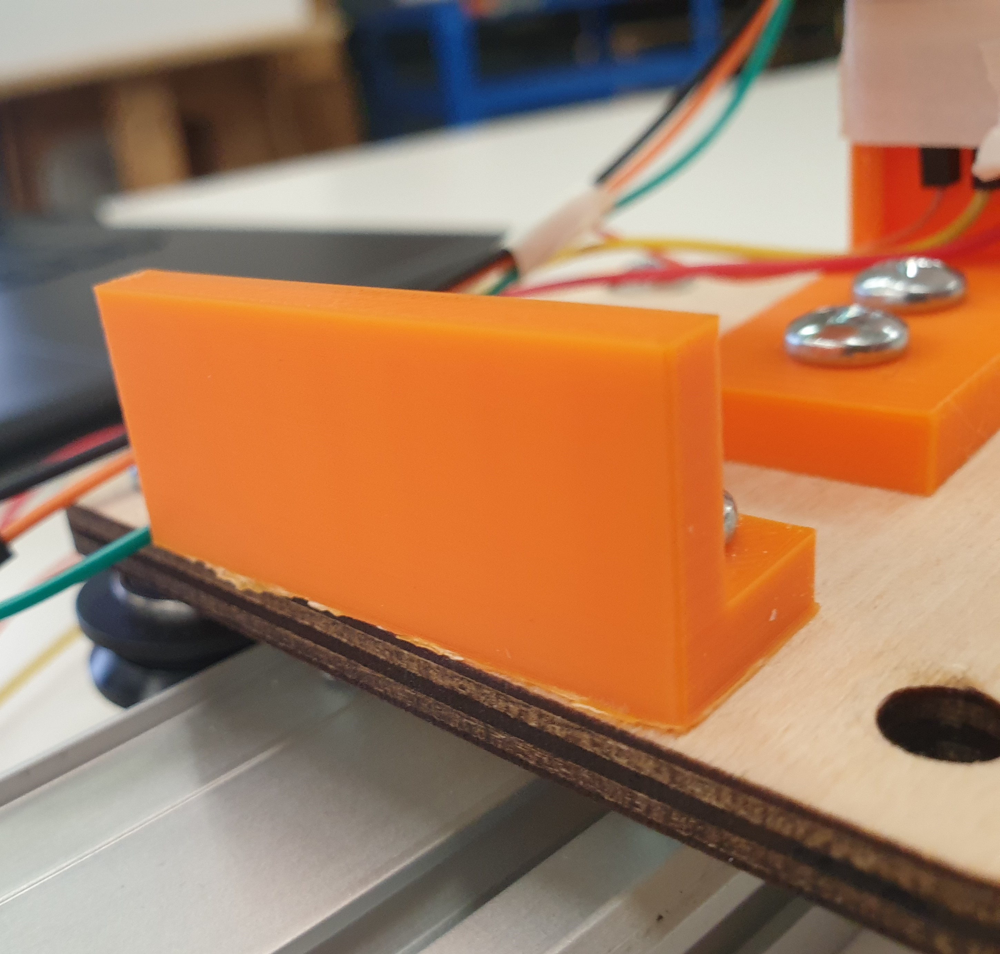

#This week’s MVP assignment
For this week, we were assigned to do the MVP (Minimum Viable Product), which implied making a serious attempt at the most challenging/intimidating aspect of my final project. I initially wanted to just look into coding, and find ways to make my final product as independent as possible from my laptop. Unfortunately, the computer vision required for hand tracking implied I was either restricted to wi-fi (if I would be able to host an online server where this information would be processed) or by a wired connection to my computer. As I then realized the impracticality of using the hand tracking software, I came up with a new concept: a moving joystick on a different slider that would enable the user to control the camera slider from a distance using radio signals.
#Building the prototype
This idea, while seemingly straightforward, proved to be challenging to build. The way I am planning to get the information from the joystick is by using two potentiometers (to detect the two axis rotations of the joystick) and an ultrasonic sensor to get the distance of the platform on the slider. I 3D printed 4 parts: a vertical wall for the ultrasonic sensor to more easily detect the platform, the cylindrical hold of the joystick and the two holders of the potentiometers (one of which had to be attached to the platform). Designing them was no easy task, as I had to make sure I had all the right measurements.
<div class="two-image-row">
<iframe src="https://college401.autodesk360.com/shares/public/SH9285eQTcf875d3c539882ea2d0a25ac7d2?mode=embed" width="640" height="480" allowfullscreen="true" webkitallowfullscreen="true" mozallowfullscreen="true" frameborder="0"></iframe>
<iframe src="https://college401.autodesk360.com/shares/public/SH9285eQTcf875d3c539dba6498d92260ef9?mode=embed" width="640" height="480" allowfullscreen="true" webkitallowfullscreen="true" mozallowfullscreen="true" frameborder="0"></iframe>
</div>
Below, you can see the 3D prints already assembled in the prototype. Unfortunately, due to lack of time, I was unable to re-design one of the pieces to fixate the potentiometer on it well enough, so I had to quickly improvise something out of tape.
<div class="two-image-row">

</div>
<div class="two-image-row">
</div>
I also placed the ultrasonic sensor on a small wooden platform as I did not have enough time to design and 3D print a proper support for it.
<div class = "flex-center-full-size">
</div>
Furthermore, when it came to the platform and rails, I used a different form of aluminum extrusion than from last week, due to lack of resources. I also used three bearings this time - assembled as shown below - and they proved to be sturdy and smooth. I might consider adapting this design for the final version of my slider.
<div class = "flex-center-full-size">
</div>
##Wiring
The wiring process was a bit more complex this time as I used an ESP-32, and the wires were connected to moving parts. For the most part, I was able to connect the wires with each other relatively securely - however, I also taped them together to make sure that they would not disconnect. The wiring for the potentiometers was very simple - as I learned how to do it in [week two](https://andreimitoiu22.github.io/PS70-Blog-Andrei-Mitoiu/Week_2.html). The same thing could be said about the ultrasonic sensor, as I knew how to wire it from [week five](https://andreimitoiu22.github.io/PS70-Blog-Andrei-Mitoiu/Week_5.html).
<div class = "flex-center-full-size">
<img src="./Images_Week_11/20221117_164425.jpg">
</div>
##Coding
The coding was relatively straightforward, as just like with the wiring, I was already familiar with how to utilize it from week one. For this demo however - as I was also running out of time - I decided to have the values received from the sensors displayed every second. I placed the code below with the proper credit to the people from which I got portions of my code and all explanatory comments.
<pre>
<font color="#95a5a6">&#47;*</font>
<font color="#95a5a6"> * This ESP32 code is created by esp32io.com</font>
<font color="#95a5a6"> *</font>
<font color="#95a5a6"> * This ESP32 code is released in the public domain</font>
<font color="#95a5a6"> *</font>
<font color="#95a5a6"> * For more detail (instruction and wiring diagram), visit </font><u><font color="#95a5a6">https:&#47;&#47;esp32io.com&#47;tutorials&#47;esp32-potentiometer</font></u><font color="#95a5a6"></font>
<font color="#95a5a6"> *&#47;</font>
<font color="#95a5a6">&#47;*********</font>
<font color="#95a5a6"> &nbsp;Rui Santos</font>
<font color="#95a5a6"> &nbsp;Complete project details at </font><u><font color="#95a5a6">https:&#47;&#47;RandomNerdTutorials.com&#47;esp32-hc-sr04-ultrasonic-arduino&#47;</font></u><font color="#95a5a6"></font>
<font color="#95a5a6"> &nbsp;</font>
<font color="#95a5a6"> &nbsp;Permission is hereby granted, free of charge, to any person obtaining a copy</font>
<font color="#95a5a6"> &nbsp;of this software and associated documentation files.</font>
<font color="#95a5a6"> &nbsp;</font>
<font color="#95a5a6"> &nbsp;The above copyright notice and this permission notice shall be included in all</font>
<font color="#95a5a6"> &nbsp;copies or substantial portions of the Software.</font>
<font color="#95a5a6">*********&#47;</font>
<font color="#434f54">&#47;&#47;I am first initialising the pins I will use as trig and echo for my ultrasonic sensor</font>
<font color="#00979c">const</font> <font color="#00979c">int</font> <font color="#000000">trigPin</font> <font color="#434f54">=</font> <font color="#000000">5</font><font color="#000000">;</font>
<font color="#00979c">const</font> <font color="#00979c">int</font> <font color="#000000">echoPin</font> <font color="#434f54">=</font> <font color="#000000">18</font><font color="#000000">;</font>
<font color="#434f54">&#47;&#47;I then define sound speed in cm&#47;uS</font>
<font color="#5e6d03">#define</font> <font color="#000000">SOUND_SPEED</font> <font color="#000000">0.034</font>
<font color="#5e6d03">#define</font> <font color="#000000">CM_TO_INCH</font> <font color="#000000">0.393701</font>
<font color="#434f54">&#47;&#47;I am then initialising the varaibles I will use to store the processed information I will receive from the ultrasonic sensor</font>
<font color="#00979c">long</font> <font color="#000000">duration</font><font color="#000000">;</font>
<font color="#00979c">float</font> <font color="#000000">distanceCm</font><font color="#000000">;</font>
<font color="#434f54">&#47;&#47;This function maps the value given into a specific range based on the input received from the adc pin</font>
<font color="#00979c">float</font> <font color="#000000">floatMap</font><font color="#000000">(</font><font color="#00979c">float</font> <font color="#000000">x</font><font color="#434f54">,</font> <font color="#00979c">float</font> <font color="#000000">in_min</font><font color="#434f54">,</font> <font color="#00979c">float</font> <font color="#000000">in_max</font><font color="#434f54">,</font> <font color="#00979c">float</font> <font color="#000000">out_min</font><font color="#434f54">,</font> <font color="#00979c">float</font> <font color="#000000">out_max</font><font color="#000000">)</font> <font color="#000000">{</font>
&nbsp;<font color="#5e6d03">return</font> <font color="#000000">(</font><font color="#000000">x</font> <font color="#434f54">-</font> <font color="#000000">in_min</font><font color="#000000">)</font> <font color="#434f54">*</font> <font color="#000000">(</font><font color="#000000">out_max</font> <font color="#434f54">-</font> <font color="#000000">out_min</font><font color="#000000">)</font> <font color="#434f54">&#47;</font> <font color="#000000">(</font><font color="#000000">in_max</font> <font color="#434f54">-</font> <font color="#000000">in_min</font><font color="#000000">)</font> <font color="#434f54">+</font> <font color="#000000">out_min</font><font color="#000000">;</font>
<font color="#000000">}</font>
<font color="#434f54">&#47;&#47; the setup routine runs once when you press reset:</font>
<font color="#00979c">void</font> <font color="#5e6d03">setup</font><font color="#000000">(</font><font color="#000000">)</font> <font color="#000000">{</font>
&nbsp;<font color="#434f54">&#47;&#47; initialize serial communication at 9600 bits per second:</font>
&nbsp;<b><font color="#d35400">Serial</font></b><font color="#434f54">.</font><font color="#d35400">begin</font><font color="#000000">(</font><font color="#000000">9600</font><font color="#000000">)</font><font color="#000000">;</font>
&nbsp;<font color="#d35400">pinMode</font><font color="#000000">(</font><font color="#000000">trigPin</font><font color="#434f54">,</font> <font color="#00979c">OUTPUT</font><font color="#000000">)</font><font color="#000000">;</font> <font color="#434f54">&#47;&#47; Sets the trigPin as an Output</font>
&nbsp;<font color="#d35400">pinMode</font><font color="#000000">(</font><font color="#000000">echoPin</font><font color="#434f54">,</font> <font color="#00979c">INPUT</font><font color="#000000">)</font><font color="#000000">;</font> <font color="#434f54">&#47;&#47; Sets the echoPin as an Input</font>
<font color="#000000">}</font>
<font color="#434f54">&#47;&#47; the loop routine runs over and over again forever:</font>
<font color="#00979c">void</font> <font color="#5e6d03">loop</font><font color="#000000">(</font><font color="#000000">)</font> <font color="#000000">{</font>
&nbsp;<font color="#434f54">&#47;&#47; read the input on analog pin GIOP36 and GIOP38:</font>
&nbsp;<font color="#00979c">int</font> <font color="#000000">analogValue</font> <font color="#434f54">=</font> <font color="#d35400">analogRead</font><font color="#000000">(</font><font color="#000000">36</font><font color="#000000">)</font><font color="#000000">;</font>
&nbsp;<font color="#00979c">int</font> <font color="#000000">analogValue_2</font> <font color="#434f54">=</font> <font color="#d35400">analogRead</font><font color="#000000">(</font><font color="#000000">38</font><font color="#000000">)</font><font color="#000000">;</font>
&nbsp;<font color="#d35400">digitalWrite</font><font color="#000000">(</font><font color="#000000">trigPin</font><font color="#434f54">,</font> <font color="#00979c">LOW</font><font color="#000000">)</font><font color="#000000">;</font>
&nbsp;<font color="#d35400">delayMicroseconds</font><font color="#000000">(</font><font color="#000000">2</font><font color="#000000">)</font><font color="#000000">;</font>
&nbsp;<font color="#434f54">&#47;&#47; Sets the trigPin on HIGH state for 10 micro seconds</font>
&nbsp;<font color="#d35400">digitalWrite</font><font color="#000000">(</font><font color="#000000">trigPin</font><font color="#434f54">,</font> <font color="#00979c">HIGH</font><font color="#000000">)</font><font color="#000000">;</font>
&nbsp;<font color="#d35400">delayMicroseconds</font><font color="#000000">(</font><font color="#000000">10</font><font color="#000000">)</font><font color="#000000">;</font>
&nbsp;<font color="#d35400">digitalWrite</font><font color="#000000">(</font><font color="#000000">trigPin</font><font color="#434f54">,</font> <font color="#00979c">LOW</font><font color="#000000">)</font><font color="#000000">;</font>
&nbsp;
&nbsp;<font color="#434f54">&#47;&#47; Reads the echoPin, returns the sound wave travel time in microseconds</font>
&nbsp;<font color="#000000">duration</font> <font color="#434f54">=</font> <font color="#d35400">pulseIn</font><font color="#000000">(</font><font color="#000000">echoPin</font><font color="#434f54">,</font> <font color="#00979c">HIGH</font><font color="#000000">)</font><font color="#000000">;</font>
&nbsp;
&nbsp;<font color="#434f54">&#47;&#47; Calculate the distance</font>
&nbsp;<font color="#000000">distanceCm</font> <font color="#434f54">=</font> <font color="#000000">duration</font> <font color="#434f54">*</font> <font color="#000000">SOUND_SPEED</font><font color="#434f54">&#47;</font><font color="#000000">2</font><font color="#000000">;</font>
&nbsp;
&nbsp;<font color="#434f54">&#47;&#47; Prints the distance gotten from the ultrasonic sensore in the Serial Monitor</font>
&nbsp;<b><font color="#d35400">Serial</font></b><font color="#434f54">.</font><font color="#d35400">print</font><font color="#000000">(</font><font color="#005c5f">&#34;Distance (cm): &#34;</font><font color="#000000">)</font><font color="#000000">;</font>
&nbsp;<b><font color="#d35400">Serial</font></b><font color="#434f54">.</font><font color="#d35400">println</font><font color="#000000">(</font><font color="#000000">distanceCm</font><font color="#000000">)</font><font color="#000000">;</font>
&nbsp;<font color="#434f54">&#47;&#47;Maps the value of the input received from the potentiometers into degrees</font>
&nbsp;<font color="#00979c">float</font> <font color="#000000">Degrees_top</font> <font color="#434f54">=</font> <font color="#000000">floatMap</font><font color="#000000">(</font><font color="#000000">analogValue</font><font color="#434f54">,</font> <font color="#000000">0</font><font color="#434f54">,</font> <font color="#000000">4095</font><font color="#434f54">,</font> <font color="#000000">0</font><font color="#434f54">,</font> <font color="#000000">360</font><font color="#000000">)</font><font color="#000000">;</font>
&nbsp;<font color="#00979c">float</font> <font color="#000000">Degrees_bottom</font> <font color="#434f54">=</font> <font color="#000000">floatMap</font><font color="#000000">(</font><font color="#000000">analogValue_2</font><font color="#434f54">,</font> <font color="#000000">0</font><font color="#434f54">,</font> <font color="#000000">4095</font><font color="#434f54">,</font> <font color="#000000">0</font><font color="#434f54">,</font> <font color="#000000">360</font><font color="#000000">)</font><font color="#000000">;</font>
&nbsp;<font color="#434f54">&#47;&#47; print out the 3 values I:</font>
&nbsp;<b><font color="#d35400">Serial</font></b><font color="#434f54">.</font><font color="#d35400">print</font><font color="#000000">(</font><font color="#005c5f">&#34;, Degrees top: &#34;</font><font color="#000000">)</font><font color="#000000">;</font>
&nbsp;<b><font color="#d35400">Serial</font></b><font color="#434f54">.</font><font color="#d35400">println</font><font color="#000000">(</font><font color="#000000">Degrees_top</font><font color="#000000">)</font><font color="#000000">;</font>
&nbsp;<b><font color="#d35400">Serial</font></b><font color="#434f54">.</font><font color="#d35400">print</font><font color="#000000">(</font><font color="#005c5f">&#34;, Degrees bottom: &#34;</font><font color="#000000">)</font><font color="#000000">;</font>
&nbsp;<b><font color="#d35400">Serial</font></b><font color="#434f54">.</font><font color="#d35400">println</font><font color="#000000">(</font><font color="#000000">Degrees_bottom</font><font color="#000000">)</font><font color="#000000">;</font>
&nbsp;
&nbsp;<font color="#434f54">&#47;&#47;Every second so it can be easier to follow</font>
&nbsp;<font color="#d35400">delay</font><font color="#000000">(</font><font color="#000000">1000</font><font color="#000000">)</font><font color="#000000">;</font>
<font color="#000000">}</font>
</pre>
##Final working prototype
Below, you can see a video of my final prototype working well.
<div class = "flex-center-full-size">
<img src="./Images_Week_11/Joystick_final.gif">
</div>
#What I learned from this prototype
For starters I knew I had to make sure to manage the wires more securely, as they could easily get in the way of the joystick. Therefore, when I will build my final product, I will make sure to 3D print the pieces to be more accommodating for the wires, and will also try to hide the connecting wires somehow. I also want to design a better holder for the potentiometers, so that I won’t have to tape them to the case anymore. Furthermore, to make sure the joystick stays upright, I want to add some springs to hold the joystick up high. This would also make a joystick sturdier, enabling a smoother movement of the camera. I also deem it necessary to test out the potentiometers and adjust their positioning accordingly in the final design. I am doing this because they have a blind area in which there is either no resistance or full resistance. The angle that actually has the varying resistance needs to be detected - so that I could then restrain the range of rotation of the potentiometer through a mechanical design.